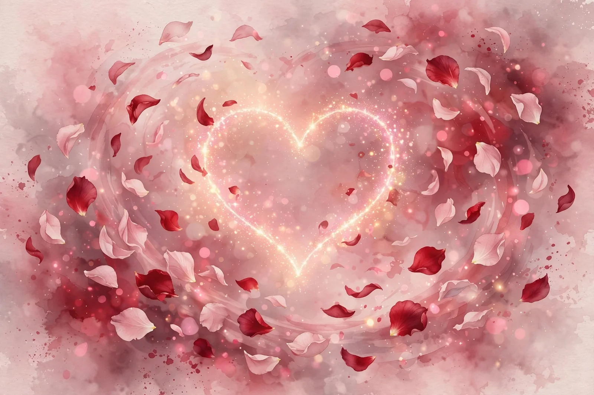
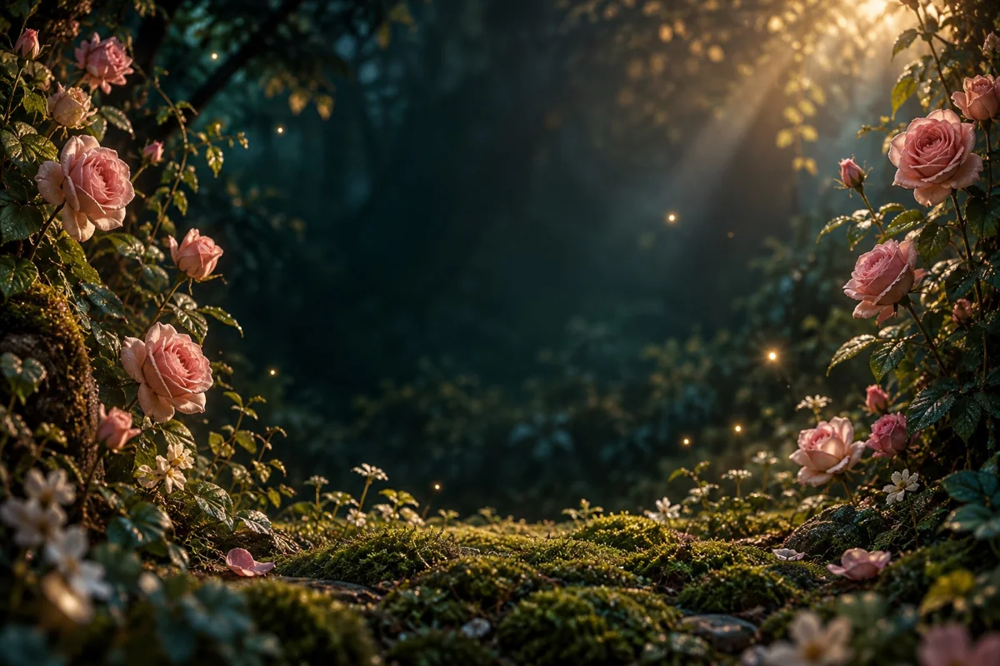
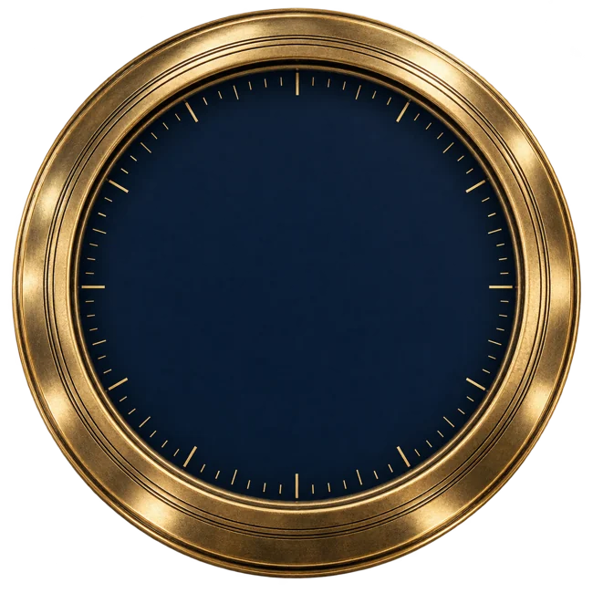

از حسین، برای تو
با تمامِ دل، همسرت
۱ / ۲۷
برای ریحانه، از طرف حسین
روی مُهر بزن؛ قصه از دستهای تو شروع میشود.
هشت کشف کوچک · یک دوستت دارم

یک قصه، فقط برای ما
اینهمه راه، اینهمه آدم؛
چه خوب که سهمِ من، تو شدی.
۱ از هشت کشف
نگهش دار. بعضی دلها، با یک لمس آرام میگیرند.
این تکه پیدا شدسه ثانیه نگهش دار؛ همینقدر نزدیک.
یک حرفِ نگفته، همینجا منتظر توست.
دلِ من در سبدی عشق به نیلِ تو سپرد
نگهش دار؛ به موسی شدنش میارزد
۲ از هشت کشف
حرفهایی هست که هر بار باید جورِ دیگری گفت.
این تکه پیدا شدروی مُهر بزن؛ این نامه برای توست.
با تمامِ دل، همسرت
۳ از هشت کشف
هر اسمت، یک جورِ تازه از دوست داشتن است.
این تکه پیدا شدیکی از نامهایی که فقط بین ماست.
۴ از هشت کشف
ده گل بکار؛ برای تمام روزهایی که با تو سبز شدند.
این تکه پیدا شد
۰ از ۱۰ گل
یک حرفِ نگفته، همینجا منتظر توست.
همقدم با من بیا این فصلِ حزنانگیز را
عشق زیبا میکند غمگینیِ پاییز را
۵ از هشت کشف
هفت فانوس را روشن کن. بعضی شبها، یک نفر کم دارند.
این تکه پیدا شد۰ از ۷ فانوس روشن
یک حرفِ نگفته، همینجا منتظر توست.
چو از شوق تو یک شب خواب در چشمم نمیآید
اجازت ده که شبها گرد کویت پاسبان باشم…
۶ از هشت کشف
زمان میگذرد؛ بعضی حرفها سرِ جایشان میمانند.
این تکه پیدا شدبه وصف هیچ کسی جز تو دم نخواهم زد
خوشا کسی که اگر شاعر است، شاعر توست
با انگشت، غبارِ روی قولم را کنار بزن.
۷ از هشت کشف
دور هم که بشوم، دلم راه برگشت را بلد است.
این تکه پیدا شد
بچرخان؛ ببین تهِ همهٔ راهها کجاست.
مرا چون موج، دوری از تو ممکن نیست ای ساحل…
۸ از هشت کشف
سی ثانیه بازی؛ یا یکراست برویم سراغ حرفِ آخر.
این تکه پیدا شدیک بار دیگر، دلم را ببر.
قلبهای روشن را بگیر؛ از تیرهها بگذر.
یک حرفِ نگفته، همینجا منتظر توست.
پشت هر پنجره باشم، نظرم خیره به توست
در نگاهم تو فقط منظرهٔ دلخواهی!
تمام این قصه، برای همین لحظه بود
هشت تکهٔ قلب هنوز منتظر توست.
برگردیم دنبال تکهٔ بعدیچه زیبا میشود گاهی، به شخصی مبتلا گشتن
برای یک نفر ماندن، برای یک نفر مردن
ریحانهام؛
این چند بازی، بهانه بود. دلم میخواست میان روزهای شلوغ، یک جای کوچک باشد که هر وقت بازش کردی، یادت بیاید: یکی هست که از داشتن تو، هنوز دلش گرم میشود.
چه خوب که تو، همسفرِ منی.
اگر پیام صوتی داری، همینجا انتخابش کن و گوش بده.
قصهمان هنوز ادامه دارد. یک لحظهاش را اینجا نگه داریم؟
این یادگاریها فقط در مرورگر همین دستگاه میمانند؛ پاککردن دادههای مرورگر، آنها را هم پاک میکند.